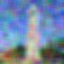
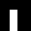

The diffusion model used in part A is DeepFloyd IF, a two stage model trained by Stability AI. To start, the
following outputs are generated for the displayed captions. The outputs reflect the text prompts pretty
accurately. Moreover, as num_inference_steps increases, the outputs become less noisy and more
detailed.
An Oil Painting of a Snowy Mountain Village
A Man Wearing a Hat
A Rocket Ship
num_inference_steps=5
num_inference_steps=20
num_inference_steps=30
1.1 Implementing the Forward Process
The forward process involves taking a clean image and adding noise. The alpha_cumprod list is
used to compute a noisy image x_t at timestep t, where larger t corresponds to more noise. The
forward(im, t) function is implemented, and the following images of the Campanile (64
x 64) are outputted at different noise levels.
Berkeley Campanile (Original Image)
Noisy Campanile at t=250
Noisy Campanile at t=500
Noisy Campanile at t=750
1.2 Classical Denoising
To try denoising the images using classical methods, Gaussian blur filtering produces the results below
(noisy images and Gaussian-denoised versions shown side by side). It is difficult, if not impossible, to
adequately remove noise.
Noisy Campanile at t=250
Noisy Campanile at t=500
Noisy Campanile at t=750
Gaussian Blur Denoising at t=250

Gaussian Blur Denoising at t=500
Gaussian Blur Denoising at t=750
1.3 One-Step Denoising
Next, the pretrained denoiser stage_1.unet is used to recover Gaussian noise from the images.
Then, this noise can be removed to recover something close to the original image.
Noisy Campanile at t=250
Noisy Campanile at t=500
Noisy Campanile at t=750
One-Step Denoised Campanile at t=250
One-Step Denoised Campanile at t=500
One-Step Denoised Campanile at t=750
1.4 Iterative Denoising
To denoise iteratively, a new list of timesteps strided_timesteps is created, iterating from
the noisiest image (largest t) to a clean image with a regular stride step (e.g. 30). Then, the denoising
step is implemented at every timestep in the iterative_denoise function.
The following example starts at timestep i_start=10 and shows the noisy image at every fifth
loop of denoising. Finally, the predicted clean image is displayed and compared against the previous
denoising
methods.
Noisy Campanile at t=90
Noisy Campanile at t=240
Noisy Campanile at t=390
Noisy Campanile at t=540
Noisy Campanile at t=690
Original
Iteratively Denoised Campanile
One-Step Denoised Campanile
Gaussian Blurred Campanile
1.5 Diffusion Model Sampling
Theiterative_denoise function can also be used to generate images from scratch, setting
i_start=0 and passing in random noise. 5 sampled images:
Sample 1
Sample 2
Sample 3
Sample 4
Sample 5
1.6 Classifier-Free Guidance (CFG)
To improve image quality, CFG computes a conditional and uncondiitonal noise estimate in
iterative_denoise_cfg. WHen the strength of the CFG is > 1, much higher quality images are
generated. 5 sampled images:
Sample 1 with CFG
Sample 2 with CFG
Sample 3 with CFG
Sample 4 with CFG
Sample 5 with CFG
1.7 Image-to-Image Translation
Following the SDEdit algorithm, original images can also be noised and forced back onto the image
manifold without conditioning. The outputs of different starting indices are shown below, gradually matching
the original images closer as i_start increases.
SDEdit with i_start=1
SDEdit with i_start=3
SDEdit with i_start=5
SDEdit with i_start=7
SDEdit with i_start=10
SDEdit with i_start=20
Original Campanile
SDEdit with i_start=1
SDEdit with i_start=3
SDEdit with i_start=5
SDEdit with i_start=7
SDEdit with i_start=10
SDEdit with i_start=20
Original Waterfall
SDEdit with i_start=1
SDEdit with i_start=3
SDEdit with i_start=5
SDEdit with i_start=7
SDEdit with i_start=10
SDEdit with i_start=20
Original Canyon
1.7.1 Editing Hand-Drawn and Web Images
This procedure works particularly well when starting with nonrealistic images. It is applied to one image
from the web and two hand-drawn images.
Espresso at i_start=1
Espresso at i_start=3
Espresso at i_start=5
Espresso at i_start=7
Espresso at i_start=10
Espresso at i_start=20
Original Espresso
Cherries at i_start=1
Cherries at i_start=3
Cherries at i_start=5
Cherries at i_start=7
Cherries at i_start=10
Cherries at i_start=20
Original Cherries
Pikachu at i_start=1
Pikachu at i_start=3
Pikachu at i_start=5
Pikachu at i_start=7
Pikachu at i_start=10
Pikachu at i_start=20
Original Pikachu
1.7.2 Inpainting
Following the RePaint paper, inpainting involves a binary mask m, where the new image has the same content
as the original image where m is 0, and new content where m is 1. At every denoising step, x_t can be forced
to have the same pixels as the original image (plus the amount of noise at timestep t) where m is 0.
Note: Mostly likely due to the diffusion model not being trained for the inpainting task, and the training
data potentially containing more humans than animals, the Dogs Inpainted output replaces the original dog
with a human.
Campanile
Mask
Hole to Fill
Campanile Inpainted
Dogs

Mask
Hole to Fill
Dogs Inpainted
Wedding
Mask
Hole to Fill
Wedding Inpainted
1.7.3 Text-Conditional Image-to-Image Translation
SDEdit can also be guided with a text prompt. The examples below use the prompt: "a rocket ship." As before,
the outputs gradually look more like the originals as the starting amount of noise decreases from level 1 to
20.
Rocket Ship at noise level 1
Rocket Ship at noise level 3
Rocket Ship at noise level 5
Rocket Ship at noise level 7
Rocket Ship at noise level 10
Rocket Ship at noise level 20
Campanile
Rocket Ship at noise level 1
Rocket Ship at noise level 3
Rocket Ship at noise level 5
Rocket Ship at noise level 7
Rocket Ship at noise level 10
Rocket Ship at noise level 20
Soda
Rocket Ship at noise level 1
Rocket Ship at noise level 3
Rocket Ship at noise level 5
Rocket Ship at noise level 7
Rocket Ship at noise level 10
Rocket Ship at noise level 20
Giraffe
1.8 Visual Anagrams
Visual anagrams appear as one image right side up, but another when flipped upside down. They are
implemented by denoising an image to obtain its noise estimate, repeating this process for the image
flipped upside down, and averaging the two noise estimates. The denoising step is then performed with
this averaged noise estimate.
An Oil Painting of an Old Man
An Oil Painting of People around a Campfire
A Photo of a Dog
A Photo of a Hipster Barista
A Rocket Ship
A Man Wearing a Hat
1.9 Hybrid Images
Hybrid images look like one image up close and another from a distance. To create hybrid images, a
composite noise estimate is created by combining low frequencies from one noise estimate (for the
image to be perceived from far away) with high frequencies of the other (for the image to be
perceived from up close).
Hybrid Image of a Skull and a Waterfall
Hybrid Image of a Skull and a Snowy Mountain Village
Hybrid Image of an Old Man and a Snowy Mountain Village